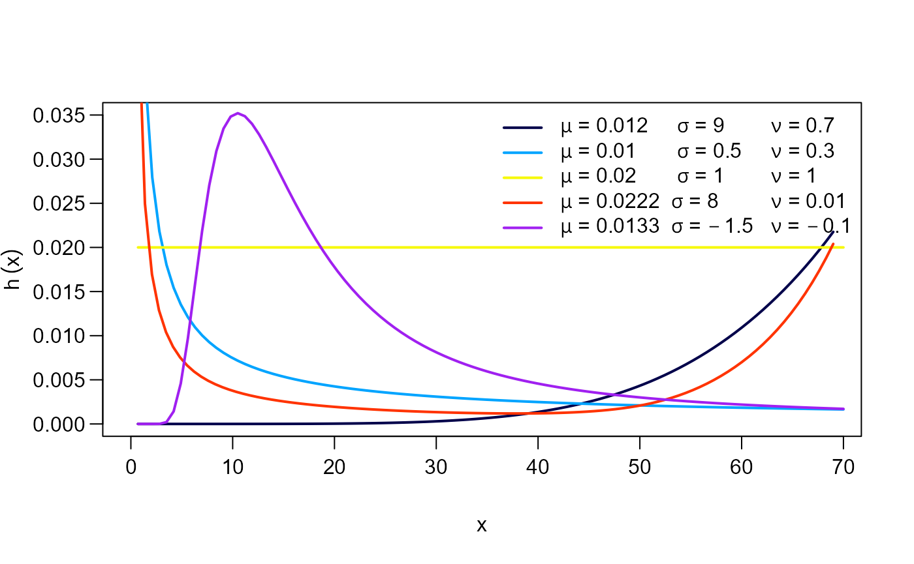
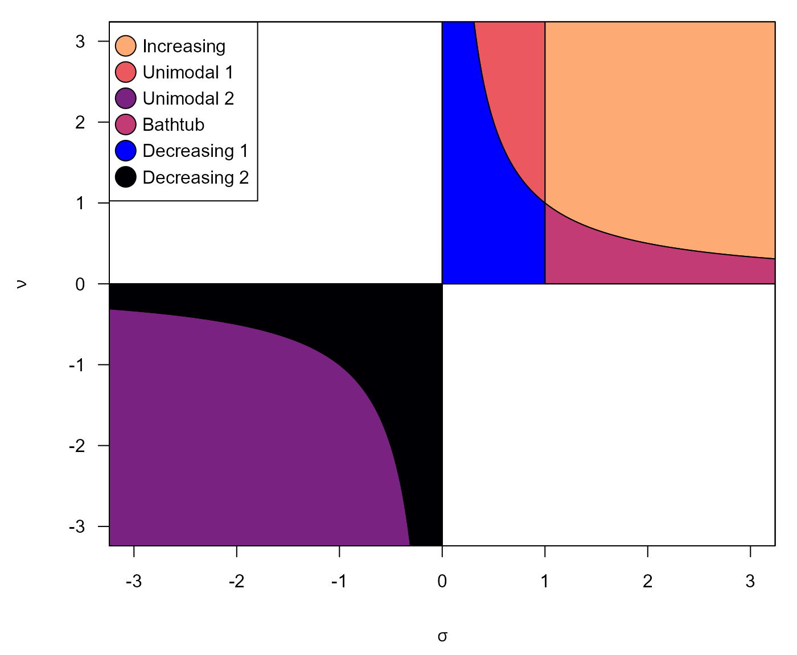

Odd Weibull distribution
This distribution was proposed by Cooray (2006). The probability density function \(f(x)\) and cumulative density function \(F(x)\) are given by:
\[f(x) = \left( \frac{\sigma\nu}{x} \right) (\mu x)^\sigma e^{(\mu x)^\sigma} \left(e^{(\mu x)^{\sigma}}-1\right)^{\nu-1} \left[ 1 + \left(e^{(\mu x)^{\sigma}}-1\right)^\nu \right]^{-2},\]
and
\[F(x) = 1 - \left[ 1 + \left( e^{(\mu x)^{\sigma}} - 1 \right)^\nu \right]^{-1}, \quad x>0,\]
respectively, where \(\mu>0, \quad \sigma\nu>0\). \(\mu\) is the scale parameter, \(\sigma\) and \(\nu\) are the shape parameters. Next figure shows possible shapes of the \(f(x)\) and \(F(x)\) for several values of the parameters.


The hazard function (hf) of the OW distribution is:
\[h(x) = \left( \frac{\sigma\nu}{x} \right) (\mu x)^\sigma e^{(\mu x)^\sigma} \left(e^{(\mu x)^{\sigma}}-1\right)^{\nu-1} \left[ 1 + \left(e^{(\mu x)^{\sigma}}-1\right)^\nu \right]^{-1}, x>0,\]
where the hf can take the following shapes:
Increasing if \(\sigma>1\) and \(\sigma\nu>1\).
Decreasing if \(\sigma<1\) and \(\sigma\nu<1\).
Unimodal shaped if either \(\sigma<0\) and \(\nu<0\) or \(\sigma<1\) and \(\sigma\nu\geq 1\).
Bathtub shaped if \(\sigma>1\) and \(\sigma\nu\geq 1\).
The figure shows possible shapes of the hf mentioned above:

The following figure illustrate the regios corresponding to the different hazard shapes:

Application examples
Time to failure on electronic equipment
Cooray (2015) used the following data provided by Wang (2000) in order to fit an OW distribution through maximum likelihood estimation (MLE):
5, 11, 21, 31, 46, 75, 98, 122, 145, 165, 195, 224, 245, 293, 321, 330, 350, 420.
The data above is the time to failure of an electronic device in hours. As an alternative to classical MLE, We used the function to fit an only-intercept model in order to estimate parameters of OW distribution without covariates. Using our initValuesOW_TTT(), we can obtain an initial guess and the valid region.
require(RelDists) data("equipment") my_initial_guess <- initValuesOW_TTT(formula = equipment ~ 1) summary(my_initial_guess) #> -------------------------------------------------------------------- #> Initial Values #> sigma = 5 #> nu = 0.1 #> -------------------------------------------------------------------- #> Search Regions #> For sigma: all(sigma > 1) #> For nu: all(nu < 1/sigma) #> -------------------------------------------------------------------- #> Hazard shape: Bathtub
initValuesOW_TTT() function detected the Bathtub hazard shape, which corresponds to a convex-then-concave shape of total time on test (TTT) plot
plot(my_initial_guess, las=1, legend_options=list(pos=1.04), par_plot=list(mar=c(3.7,3.7,1,2.1), mgp=c(2.5,1,0)))

Therefore, we define the search region according to initValuesOW_TTT() outputs
# Custom search region myvalues <- list(sigma="all(sigma > 1)", nu="all(nu < 1/sigma)")
and we perform the fit using gamlss()
require(gamlss) param_ee <- gamlss(equipment ~ 1, sigma.fo = ~ 1, nu.fo = ~ 1, sigma.start = 5, nu.start = 0.1, control = gamlss.control(n.cyc=300, trace=FALSE), family = myOW_region(family = OW(sigma.link='identity'), valid.values = myvalues, initVal = my_initial_guess)) summary(param_ee) #> ****************************************************************** #> Family: c("OW", "Odd Weibull") #> #> Call: gamlss(formula = equipment ~ 1, sigma.formula = ~1, #> nu.formula = ~1, family = myOW_region(family = OW(sigma.link = "identity"), #> valid.values = myvalues, initVal = my_initial_guess), #> sigma.start = 5, nu.start = 0.1, control = gamlss.control(n.cyc = 300, #> trace = FALSE)) #> #> Fitting method: RS() #> #> ------------------------------------------------------------------ #> Mu link function: log #> Mu Coefficients: #> Estimate Std. Error t value Pr(>|t|) #> (Intercept) -5.240 0.205 -25.56 8.79e-14 *** #> --- #> Signif. codes: 0 '***' 0.001 '**' 0.01 '*' 0.05 '.' 0.1 ' ' 1 #> #> ------------------------------------------------------------------ #> Sigma link function: identity #> Sigma Coefficients: #> Estimate Std. Error t value Pr(>|t|) #> (Intercept) 3.283 1.423 2.307 0.0357 * #> --- #> Signif. codes: 0 '***' 0.001 '**' 0.01 '*' 0.05 '.' 0.1 ' ' 1 #> #> ------------------------------------------------------------------ #> Nu link function: log #> Nu Coefficients: #> Estimate Std. Error t value Pr(>|t|) #> (Intercept) -1.2715 0.5019 -2.534 0.0229 * #> --- #> Signif. codes: 0 '***' 0.001 '**' 0.01 '*' 0.05 '.' 0.1 ' ' 1 #> #> ------------------------------------------------------------------ #> No. of observations in the fit: 18 #> Degrees of Freedom for the fit: 3 #> Residual Deg. of Freedom: 15 #> at cycle: 38 #> #> Global Deviance: 216.2284 #> AIC: 222.2284 #> SBC: 224.8996 #> ******************************************************************
In the following table we summarize the results and compare them with those gotten by Cooray (2015)
| Parameter | MLE (Cooray 2015) | GAMLSS |
|---|---|---|
| \(\mu\) | 5.35e-03 | 5.30e-03 |
| \(\sigma\) | 3.22388 | 3.2828 |
| \(\nu\) | 0.28424 | 0.2804 |
Mortality in mice exposed to radiation
Cooray (2006) used a dataset with 208 data points provided by Kimball (1960) with the ages at death in weeks for male mice exposed to 240r of gamma radiation. Again, we implement a workflow for parameter estimation with myOW_region and gamlss functions.
# Do not forget to load 'RelDists' package data("mice") init_vals <- initValuesOW_TTT(formula = mice ~ 1) summary(init_vals) #> -------------------------------------------------------------------- #> Initial Values #> sigma = 2 #> nu = 6 #> -------------------------------------------------------------------- #> Search Regions #> For sigma: all(sigma > 1) #> For nu: all(nu > 1/sigma) #> -------------------------------------------------------------------- #> Hazard shape: Increasing
With initValuesOW_TTT() function we identified an increasing hazard shape, as well as was stated by Cooray (2006), because TTT plot is concave.

Hence, we implement the estimation procedure
# Custom search region # Do not forget to load 'gamlss' library param_mm <- gamlss(mice ~ 1, sigma.fo = ~ 1, nu.fo = ~ 1, sigma.start = 2, nu.start = 6, control = gamlss.control(n.cyc=300, trace=FALSE), family = myOW_region(family = OW(sigma.link='identity'), valid.values = "auto", initVal = init_vals)) summary(param_mm) #> ****************************************************************** #> Family: c("OW", "Odd Weibull") #> #> Call: gamlss(formula = mice ~ 1, sigma.formula = ~1, nu.formula = ~1, #> family = myOW_region(family = OW(sigma.link = "identity"), #> valid.values = "auto", initVal = init_vals), #> sigma.start = 2, nu.start = 6, control = gamlss.control(n.cyc = 300, #> trace = FALSE)) #> #> Fitting method: RS() #> #> ------------------------------------------------------------------ #> Mu link function: log #> Mu Coefficients: #> Estimate Std. Error t value Pr(>|t|) #> (Intercept) -4.87857 0.01489 -327.6 <2e-16 *** #> --- #> Signif. codes: 0 '***' 0.001 '**' 0.01 '*' 0.05 '.' 0.1 ' ' 1 #> #> ------------------------------------------------------------------ #> Sigma link function: identity #> Sigma Coefficients: #> Estimate Std. Error t value Pr(>|t|) #> (Intercept) 6.1753 0.8304 7.437 2.77e-12 *** #> --- #> Signif. codes: 0 '***' 0.001 '**' 0.01 '*' 0.05 '.' 0.1 ' ' 1 #> #> ------------------------------------------------------------------ #> Nu link function: log #> Nu Coefficients: #> Estimate Std. Error t value Pr(>|t|) #> (Intercept) -0.2793 0.1636 -1.708 0.0892 . #> --- #> Signif. codes: 0 '***' 0.001 '**' 0.01 '*' 0.05 '.' 0.1 ' ' 1 #> #> ------------------------------------------------------------------ #> No. of observations in the fit: 208 #> Degrees of Freedom for the fit: 3 #> Residual Deg. of Freedom: 205 #> at cycle: 93 #> #> Global Deviance: 1977.99 #> AIC: 1983.99 #> SBC: 1994.003 #> ******************************************************************
Then, we report the results and compare them with those in Cooray (2006)
| Parameter | MLE (Cooray 2006) | GAMLSS |
|---|---|---|
| \(\mu\) | 7.61e-03 | 7.61e-03 |
| \(\sigma\) | 6.2278 | 6.1753 |
| \(\nu\) | 0.7495 | 0.7563 |
References
Cooray, Kahadawala. 2006. “Generalization of the Weibull distribution: The odd Weibull family.” Statistical Modelling 6 (3): 265–77. https://doi.org/10.1191/1471082X06st116oa.
———. 2015. “A study of moments and likelihood estimators of the odd Weibull distribution.” Statistical Methodology 26 (September): 72–83. https://doi.org/10.1016/j.stamet.2015.03.003.
Kimball, A. W. 1960. “Estimation of Mortality Intensities in Animal Experiments.” Biometrics 16 (4): 505. https://doi.org/10.2307/2527758.
Wang, F. K. 2000. “A new model with bath tub-shaped failure rate using an additive Burr XII distribution.” Reliability Engineering and System Safety 70 (3): 305–12. https://doi.org/10.1016/S0951-8320(00)00066-1.